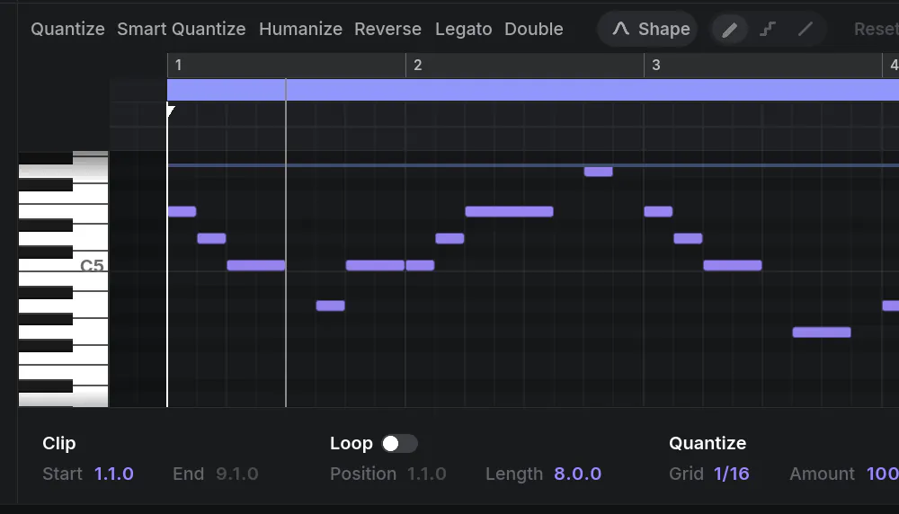
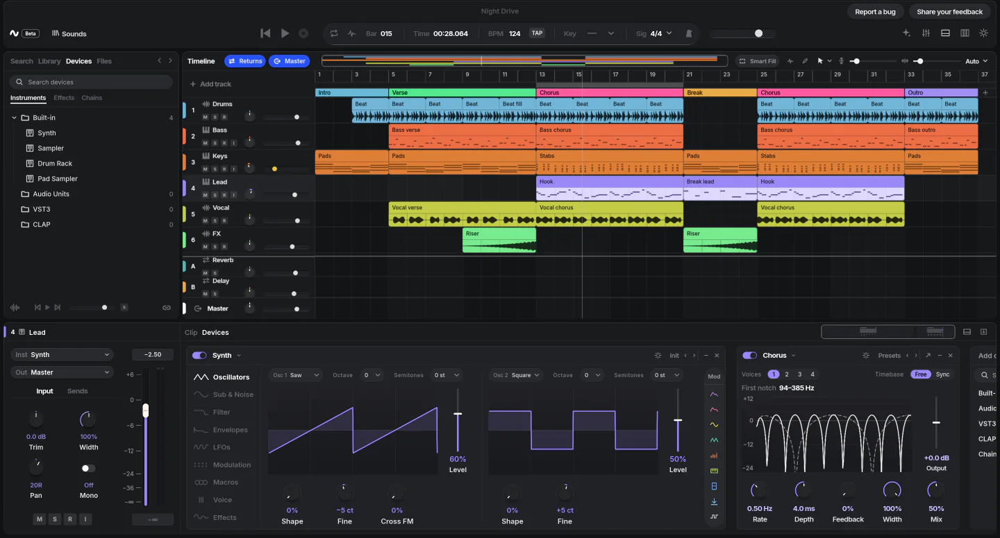
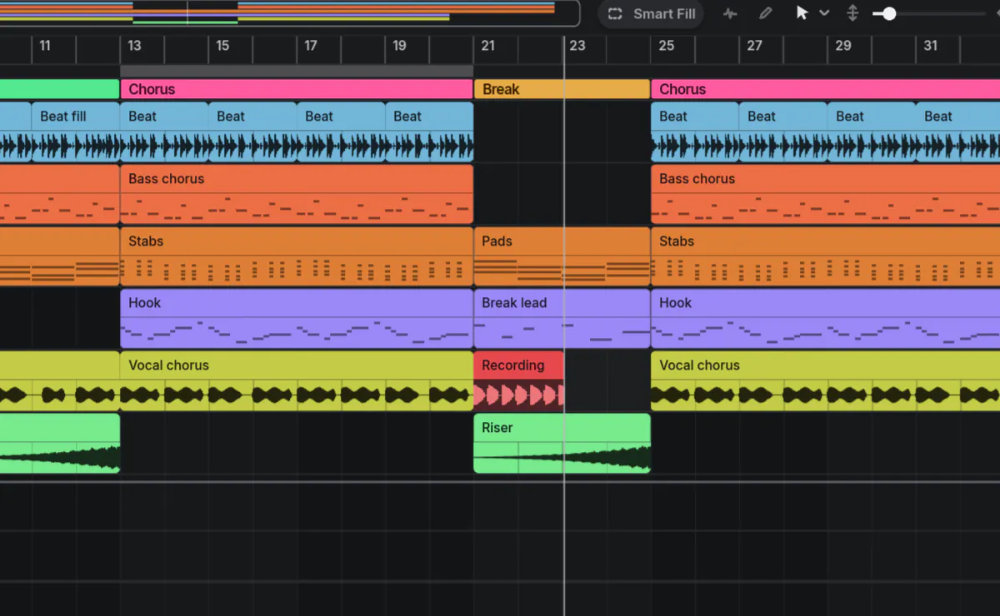
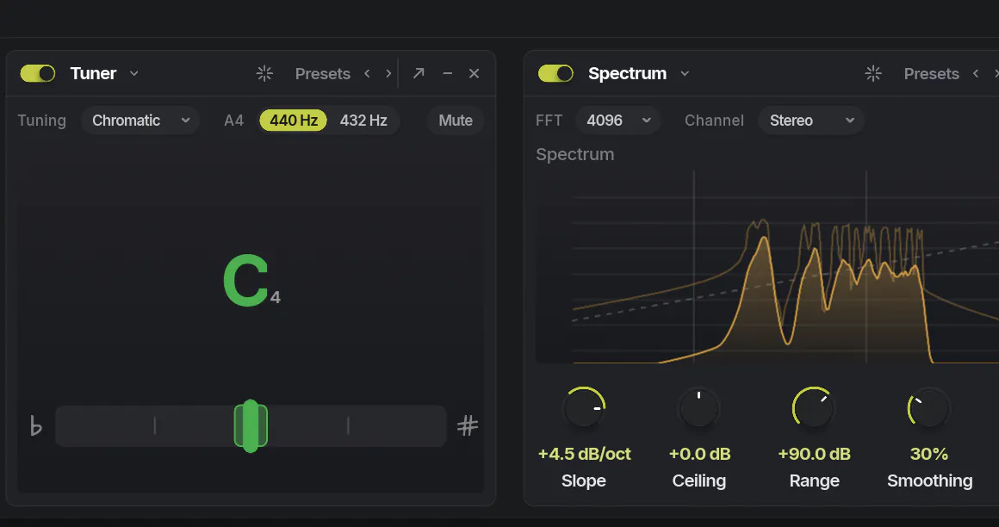
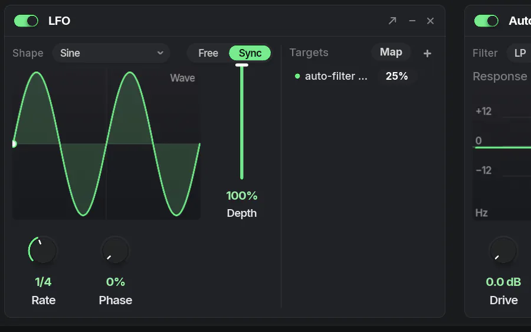
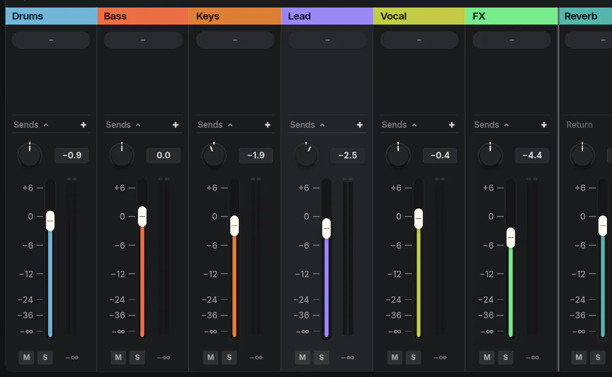
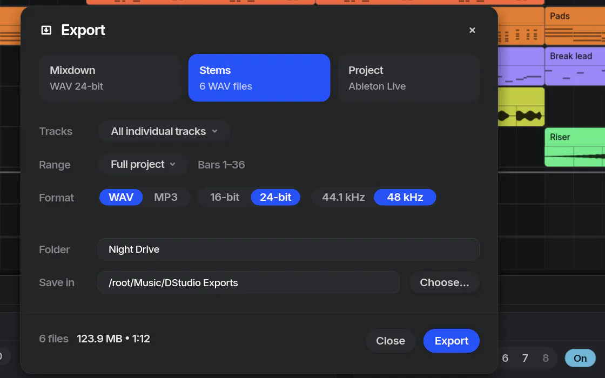

Write
Draw notes in the piano roll, then quantize, transpose or humanize them and paint in dynamics. Or plug in a MIDI keyboard and record what you play.

Record, write, arrange and mix whole songs. Free and open source, for Mac, Windows and Linux.
Version 0.5 · Free for good

Draw notes in the piano roll, then quantize, transpose or humanize them and paint in dynamics. Or plug in a MIDI keyboard and record what you play.

Count in, loop a section and every pass becomes a take. Pick the best one or comp the best parts together, and takes land on the beat you played.

Start from a synth, sampler or drum rack, then reach for compression, EQ, saturation, reverb, delay and pitch correction.

Right-click any knob and choose Automate, or just move it while you record. An LFO can wobble any setting.

Faders, groups and reverb and delay returns. Plugins that add delay are compensated automatically, so everything stays in time.

Bounce the mix, every track as a stem or a seamless loop, as WAV or MP3. Undo covers every edit on the way.

Every one comes with Device, with presets to start from, and every knob can be automated. Bring your own plugins too: Audio Units on Mac, and VST3 and CLAP everywhere.
No monthly fee, no paid upgrades and no account to sign in to. Everything on this page is in the one free version.
No company can raise the price, lock your songs away or switch it off. Anyone can read the code.
Export stems and MIDI, or a whole Ableton Live set with its returns and sends. Your music goes wherever you go next.
Yes. There's no subscription, no paid edition and no account. Device is open source under the AGPL, so it stays free.
Not yet. Device is pre-alpha: you can make whole songs with it, but a few things are still missing and the project format may change, so keep copies of anything you care about. The status table is always the latest word.
macOS 13 or later on Apple silicon or Intel, Windows on x64, and Linux on x64 or ARM64 with X11 or Wayland. Every version has the same features.
Yes: Audio Units on Mac, and VST3 and CLAP on every system. Device checks new plugins in the background, so one that crashes is set aside instead of taking your session down with it.
Export the mix or every track as a stem in WAV or MP3, save MIDI, or open the whole project in Ableton Live with its returns and sends.
If you're comfortable with developer tools, run the newest code from the source. The build guide lists what to install on each system.
git clone https://github.com/devicedaw/device.git
cd device
cargo run --release -p dstudio-app -- --demo Version 0.5 is free to download, like every version after it.
Universal app · .dmg
Download for Mac Signed and notarised by Apple. Needs macOS 13 or later.x64 · installer
Download for Windows Not signed yet: choose More info › Run anyway. Portable .zipx86_64 · .tar.gz
Download for Linux Unpack it and run install.sh. ARM64 (aarch64)